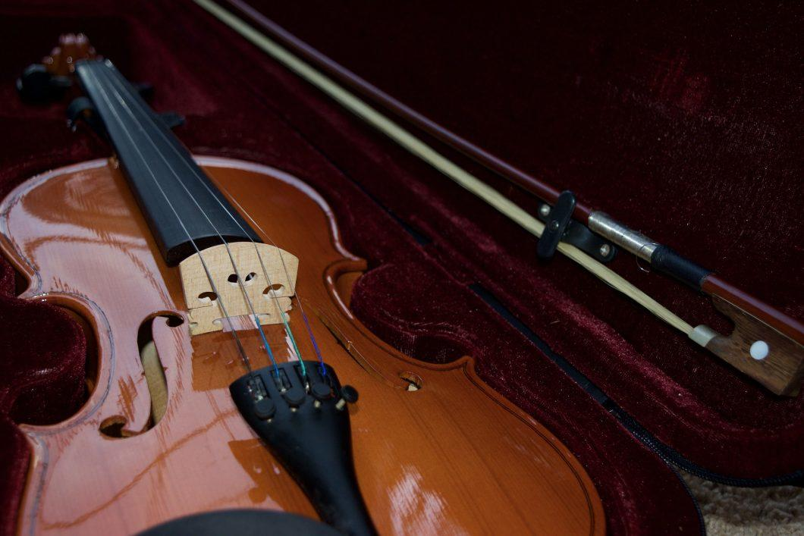
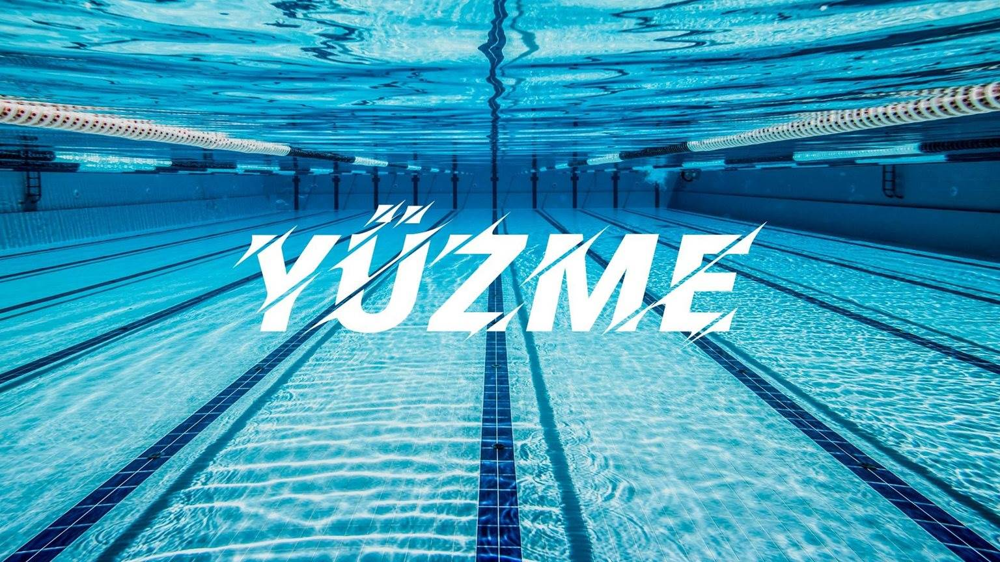

5 aylık test görev deneyimim süresince ve devam eden süreçte kendimi geliştirmeyi ve her yeni gün kendime bir şeyler katmayı hedefliyorum.Gelişmişlik düzeyimle orantılı olarak yeni iş alanlarında görev almayı planlıyorum.
Experiences
TurkaI şirketinde 15.02.2021 tarihinde çalışmaya başladım .
Education
THK üniversitesi
Hasanoğlan Atatürk Anadolu Öğretmen Lisesi
Cumhuriyet İlk Öğretim Okulu
Hobies
Keman çalmak ve yüzmek benim için tutkudur. Bunun yanında mesleğimle ilgili olan haberler yeni gelişmeleri takip etmek, yapabileceğim projeleri saptayıp uygulamaya dökmek hobilerim arasındadır.

